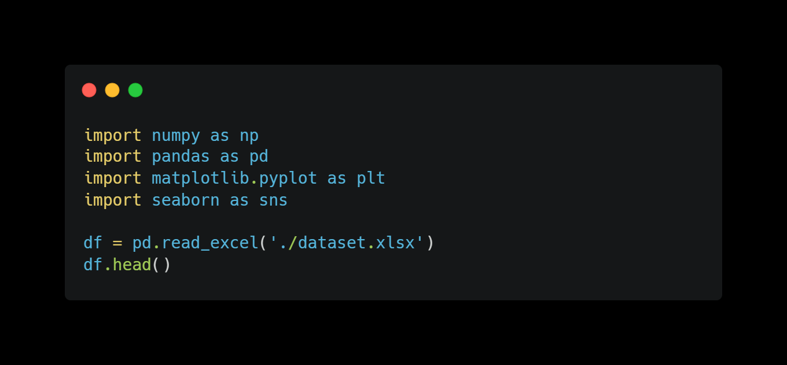
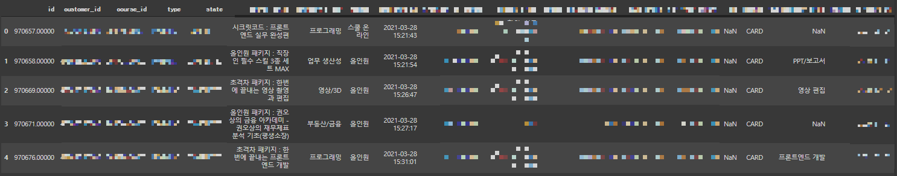
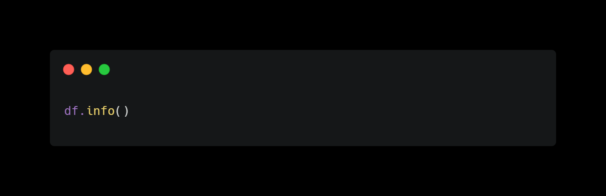
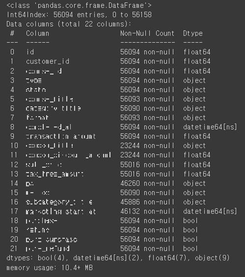
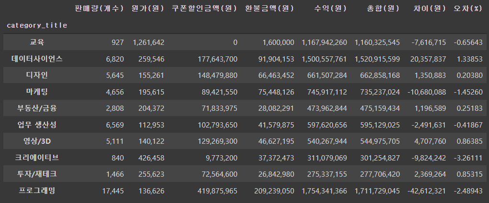

탐색적 데이터 분석 with 패스트캠퍼스
패스트캠퍼스의 2021년 상반기 데이터를 활용하여 EDA 진행하였습니다.
주제 : 신규 강사 채용에 대한 category 선정
- 분석하는 이유 ❓
: 각 분야(프로그래밍,디자인,금융 등) 강사 지원자가 100명씩 있다면, 누굴 뽑아야 이득일까?
- 분석 과정 🔥
1️⃣ 가설 식을 세운다
2️⃣ 변수의 점유율을 구한다
3️⃣ 가설 식의 타당성을 검토한다
4️⃣ 상관계수를 구한다
5️⃣ 각 category 점수를 구한다
6️⃣ 결과를 분석한다
전처리 후 데이터 살펴보기
 일부 데이터는 모자이크처리 했습니다
 일부 데이터는 모자이크처리 했습니다
1. 가설 식을 세운다
-> 수익 = (판매량 x 원가) - 쿠폰할인총액 - 환불총액
- 가설 식을 세운 이유 :
1. category 선정을 위해서는 수익에 관련된 컬럼만 필요하다
2. 기존 데이터셋에서 수익과 관련없는 컬럼의 영향이 크다
3. 수익 측정에 필요한 컬럼만 걸러낼 필요가 있다
4. 걸러낸 컬럼의 타당성을 검토할 필요가 있다
5. 타당성 검토를 위해 수익(가설)식을 설정한다
2. 변수의 점유율을 구한다
-> 변수 = 판매량, 원가, 쿠폰할인총액, 환불총액
각 분야별 점유율 파악
3. 가설 식의 타당성을 검토한다
구체적인 데이터는 공개하기 어려워 모자이크 처리 했음을 알려드립니다.
위 표는 내가 세운 가설식(수익)과 실제거래총합(총합)을 비교하는 표이다
마지막 컬럼에 보면 '오차(%)'가 있다. 오차는 내가 세운 가설식과 실제수익이 얼마나 차이가 나는지를 보여주는 지표이다.
❗ 오차율(%)이 category마다 다르지만, -3.3~1.3%인 것을 알 수 있다. 이를 통해 가설식의 문제가 없음을 의미한다
4. 상관계수를 구한다
가설식을 통해 "수익"과 관련있는 상관계수를 구한다
우리가 봐야할 항목은 '판매량', '원가', '쿠폰할인금액', '환불금액'이다
판매량 : 0.72
원가 : 0.17
쿠폰할인금액 : 0.72
환불금액 : 0.70
5. 각 category 환산한 점수를 구한다
본 그래프는 실제데이터와 다를수 있습니다
1순위 프로그래밍, 2순위 데이터사이언스, 3순위 디자인 등으로 정해진다
6. 결과 분석
본 그래프는 분야별 상대 값으로 실제 값이 아닙니다
본 그래프는 분야별 상대 값으로 실제 값이 아닙니다
본 그래프는 분야별 상대 값으로 실제 값이 아닙니다
🥇 프로그래밍
🥈 데이터사이언스
🥉 디자인
🎖 마케팅,영상/3D,업무생산성,부동산/금융,투자/재테크
💣 교육
💣 크리에이티브
❓ 프로그래밍 분야에 강사 지원자가 100명이 있다면 ❓
'프로그래밍'은 강사 100명 모두를 채용할 수 있을 정도로 수요가 매우 높은 수준이다. 판매금액이 낮음(뒤에서 2번째)에도 판매량이 압도적으로 높아 수익이 다른 분야와 눈에 띌 정도로 높다. 그만큼 많은 이목을 받고있는 분야이며, 패스트캠퍼스도 많은 노력을 기울이고 있는 분야이다.
- 본 결과와 현 상황을 비교!
1. '프로그래밍' 점수가 압도적으로 높은 만큼 실제 판매량(금액)이 압도적으로 많다
2. '교육'은 사실 일반 강사가 참여할 수 없는 카테고리이다.(전속 강사전용)
3. '크리에이티브'은 2022년 기준 패스트캠퍼스 홈페이지의 카테고리에 없다